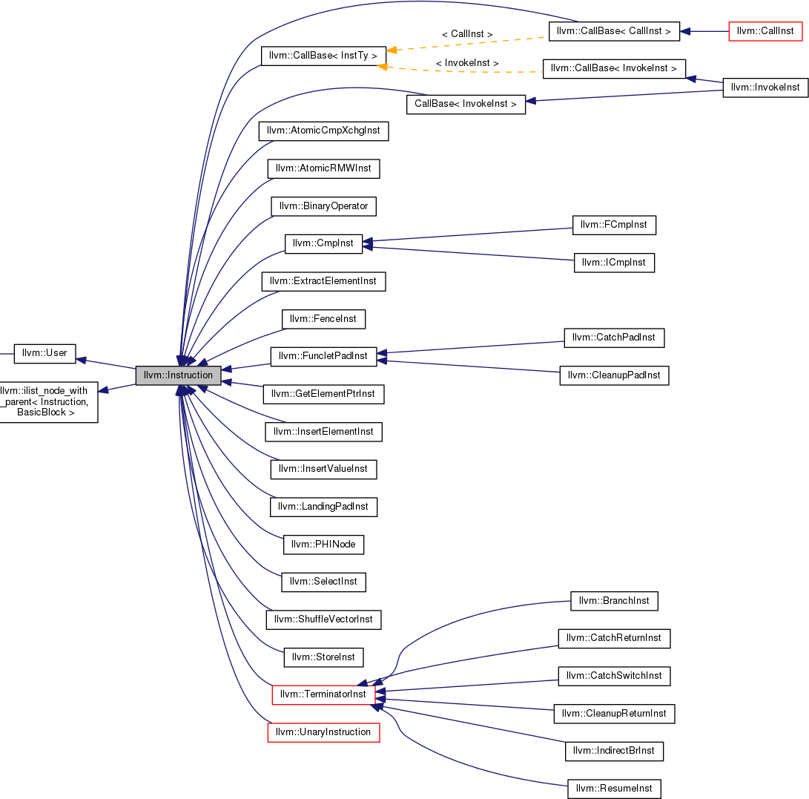
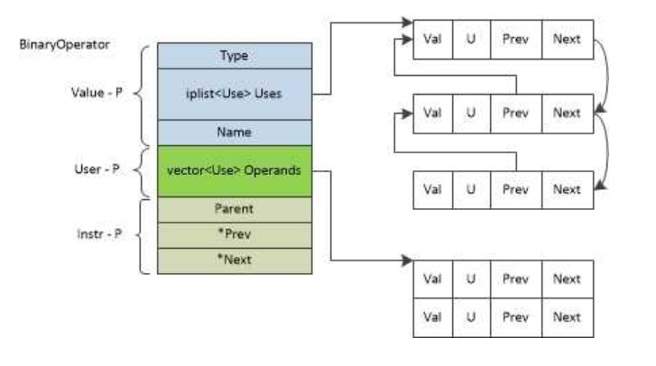

指令复算是软件容错的基本方法，自动软加固工具和故障注入工具在软加固研究中几乎必不可少，本文随笔者工作进度，逐步完成一个利用LLVM实现的自动软加固工具。将会记录实现面临的关键技术，及开发过程中遇到的细节问题。
1 如何插入一条指令
参考：https://stackoverflow.com/questions/35198935/add-an-llvm-instruction
1 | BasicBlock *B = I->getParent(); |
其中，I是Instruction，BinaryOperator是Instruction的子类。
各种不同的类型的指令，其插入方式各有不同，上面是针对所有指令的直接clone()，该操作除了没有复制指令所在的位置以外，全部copy原始指令的信息，包括use信息，这是实现复算的最便捷的方式，但我们仍然需要插入一些比对、跳转、函数调用等指令，这些指令大多都提供了相应的Create方法，只要有相应的示例，学习起来并不困难。
CmpInst
1
2Value *newOp = it->second;
CmpInst *cmp = CmpInst::Create(Instruction::ICmp, CmpInst::ICMP_NE, it->first, it->second, "eddi_check", inst);CallInst
无参数的call
1
2
3
4
5BB->getInstList().insertAfter(BB->begin(),newret);
FunctionType *error_handle_func_type = FunctionType::get(Type::getVoidTy(context), false);
Constant *error_handling_func = F.getParent()->getOrInsertFunction("error_handling",
error_handle_func_type);
CallInst::Create(error_handling_func, "", BB->begin());有参数的call
1
2
3
4
5
6
7
8
9
10
11
12
13
14
15std::vector<Type*> parameterVector(1);
parameterVector[0] = Type::getInt32Ty(context); //ID
ArrayRef<Type*> parameterVector_array_ref(parameterVector);
FunctionType *exit_func_type = FunctionType::get(Type::getVoidTy(context),parameterVector_array_ref, false);
Constant *exit_func = F.getParent()->getOrInsertFunction("exit", exit_func_type);
Value *one = ConstantInt::get(Type::getInt32Ty(context),1);
std::vector<Value*> exitArgs;
exitArgs.push_back(one);
ArrayRef<Value*> exitArgs_array_ref(exitArgs);
//Create the Function
CallInst::Create(exit_func, exitArgs_array_ref, "", BB->end());
2 如何识别扫描到的指令的类型
参考：https://stackoverflow.com/questions/30250289/how-to-check-the-opcode-of-an-instruction
5down voteaccepted
isais used to check for an existing dirived instruction class. classi.getopcode()could help you to get all the operations information.According to the Inheritance diagram for
llvm::Instruction,LLVM internally will divide all the instruction into several different classes, likellvm::BinaryOperator,llvm::CallInst,llvm::CmpInst, etc. But there is no exact operation information for these classes.However, for
Instruction::getOpcode(), it will directly get the operation from thellvm::Instructionobject. You could refer to Instruction.def for an idea about defination of each instruction. Basically, the opcode will be the exact operations the instruction intends to.Say, for an LLVM IR
add. You can useisa<llvm::BinaryOperator>, to know that this is aBinaryOperator. But this is only for what the instruction class it is. If you want to know whether it is anADDor aSUB.i.getopcode()should be used here.
上面给出了几个很好的总结。
Instruction 有多少子类
在http://llvm.org/doxygen/classllvm_1_1Instruction.html 中，有Instruction的继承关系，可以看到Instruction所有的子类

查询每个指令具体属于的操作码，如对于BinaryOperator，具体是ADD还是SUB
https://llvm.org/svn/llvm-project/llvm/trunk/include/llvm/IR/Instruction.def
但目前并不知道如何使用这些信息。
使用isa\
isa
(i) and isa (i) without changing to if (i.getopcode()==…)
3. 如何为指令插入Metadata
插入字符串类型，借助MDString类，以下为获取每条指令的操作码的名字
1 | Value *Elts[] = { |
插入数字类型
1 | std::vector<Value*> llfiindex(1); |
删除一条指令的Metadata
1 | Instruction *temp = inst->clone(); |
4. 如何更新复算指令的引用
为实现代码复算，我们需要为复算指令增加引用，例如：
1 | %mul = mul nsw i32 %8, %10 原始指令 |
为此，我们需要获取每个每个副本指令中需要更新的use数据的信息。
在llvm中，由于采用SSA，所有的数据只会被赋值一次，而且，在数据结构上，所有的数据指针(Value )都是一个指向该数据的指令(Instruction )，注意：Instruction继承自Value和Use。
所以，解决更新副本指令引用的关键，就是找到每个指令所use的数据的副本数据。我们在每条指令的复算过程中，都将原始数据指针（也就是原始指令指针）与副本数据指针（也就是副本数据指针）之间的映射关系存放到map中，这样，我们只需要找到每个指令的所有引用就足以解决问题了。
在https://www.zhihu.com/question/41999500中，给出了很清晰的关于use-def在llvm中如何存储的描述。
llvm的每条指令都存储了def-use信息，结构如下：

对于一个Instruction inst，可以获取其operator的iterator，并且通过for循环遍历之。
1 | for (User::op_iterator opIterator = temp->op_begin(); opIterator != temp->op_end(); opIterator++) { |
同时，Use类中，还有一个方法：
1 | public: |
也就是说，Use的值会自动转换成一个Value的指针。
所以，我们可以通过opIterator来获取当前指令的所有引用信息。
实现复算和更新副本指令引用的代码如下：
1 | BasicBlock *B = inst->getParent(); |
5.复算的范围
最佳实践是除了terminitor以外，全部复算，这样就与EDDI算法的核心思想相吻合，即，对所有的指令、寄存器、内存都进行了复算。然而，由于某些指令的执行后果的不确定性，导致这样做会出现一些问题。
landingpad指令
这是LLVM中的异常处理机制，在复算检验实现过程中，曾出现过如下异常信息
1
2
3
4
5
6
7
8
9
10
11
12
13
14
15
16
17
18
19
20
21
22
23
24
25LandingPadInst not the first non-PHI instruction in the block.
%21 = landingpad { i8*, i32 } personality i8* bitcast (i32 (...)* @__gxx_personality_v0 to i8*)
cleanup, !mxk1 !2, !mxk !64, !numuses !4
Broken module found, compilation aborted!
0 opt 0x00000000018707fa llvm::sys::PrintStackTrace(_IO_FILE*) + 53
1 opt 0x0000000001870a8a
2 opt 0x0000000001870453
3 libpthread.so.0 0x00007f3b2999f390
4 libc.so.6 0x00007f3b28d58428 gsignal + 56
5 libc.so.6 0x00007f3b28d5a02a abort + 362
6 opt 0x000000000175e9eb
7 opt 0x000000000175e69f
8 opt 0x0000000001734ff8 llvm::FPPassManager::runOnFunction(llvm::Function&) + 330
9 opt 0x000000000173516e llvm::FPPassManager::runOnModule(llvm::Module&) + 120
10 opt 0x000000000173546e
11 opt 0x0000000001735966 llvm::legacy::PassManagerImpl::run(llvm::Module&) + 262
12 opt 0x0000000001735b3f llvm::legacy::PassManager::run(llvm::Module&) + 39
13 opt 0x00000000008f3828 main + 5804
14 libc.so.6 0x00007f3b28d43830 __libc_start_main + 240
15 opt 0x00000000008e4ef9 _start + 41
Stack dump:
0. Program arguments: /home/xiaofengwo/llvm/llvm-3.4/build/bin/opt -load /home/xiaofengwo/llvm/ir_sihft_llvm_build/bin/../llvm_passes/llfi-passes.so -insttracepass -maxtrace 250 -o /home/xiaofengwo/llvm/llvm-workspace/sample_programs/kakadu_source_flat/llfi/a-profiling.ll /home/xiaofengwo/llvm/llvm-workspace/sample_programs/kakadu_source_flat/llfi/a-llfi_index.ll -S
1. Running pass 'Function Pass Manager' on module '/home/xiaofengwo/llvm/llvm-workspace/sample_programs/kakadu_source_flat/llfi/a-llfi_index.ll'.
2. Running pass 'Module Verifier' on function '@_ZN13kdu_synthesisC2E14kdu_resolutionP20kdu_sample_allocatorbf'
Aborted (core dumped)landingpad 貌似只能是每个基本块的第一条non-PHI指令。因此，我们把landingpad暂时移出复算域。
call指令
如果对call指令也进行2遍调用，会在执行的时候报段错误，可能是由于每调用一次都产生两遍副本，对于最底层的函数调用次数过多导致的。
如果对call指令仅调用1遍，而后对其define的副本进行同步，则有可能导致call指令引用的变量所指向的内存单元仅在原始变量中是有效的，即如果call指令所引用的变量是指针，那么调用过call指令后，副本指针所指向的位置可能没有值。但由于副本指针和原始指针指向同一位置，如果有对这块地址的修改操作，恐怕会有问题。
在EDDI算法中，也无法解决call指令的问题，无论是调用之后再进行同步，还是调用call指令2遍，都不能自动化实现对于黑盒函数调用之后的数据一致性问题。
Todo：考虑对函数进行分析，确定函数是否可以被调用2遍的角度，实现真正的EDDI算法。
StoreInst和AllocaInst
在EDDI算法中，应该对二者进行复算，但由于call指令的潜在威胁，暂时无法实现完全的EDDI算法，只能实现针对寄存器的SWIFT算法。StoreInst 和 AllocaInst 指令不参与复算。
然而，目前没有对AllocaInst和CallInst之后的返回值进行复算，这样，仍然有部分变量漏掉了，应该在这些指令之后加入一条赋值指令，但目前没有找到这样的指令，考虑增加一条BinaryOperator指令来完成赋值。
Todo：在AllocaInst和CallInst后加入对返回值的复算。
6. 检查校验
对于SWIFT算法，校验点插在StoreInst和CallInst，以及branch指令前。
校验点包括比较和跳转，比较指令比较下一条存储或者函数调用将要用到的变量，跳转指令根据比较结果，选择继续执行还是跳转到最后。
- 比较指令
比较指令分为ICmpInst和FCmpInst，要按照操作数的类型而调整使用的比较指令类型。
1 | if (it->first->getType()->isIntOrIntVectorTy() || it->first->getType()->isPtrOrPtrVectorTy()) { |
其中，it是操作数的迭代器。
然而，按照以上代码，在对br指令之前的副本变量进行校验的时候，会有部分指令报错
1 | /home/xiaofengwo/llvm/llvm-3.4/build/bin/opt -load /home/xiaofengwo/llvm/ir_sihft_llvm_build/bin/../llvm_passes/llfi-passes.so -insttracepass -maxtrace 250 -o /home/xiaofengwo/llvm/llvm-workspace/sample_programs/kakadu_source_flat/llfi/a-profiling.ll /home/xiaofengwo/llvm/llvm-workspace/sample_programs/kakadu_source_flat/llfi/a-llfi_index.ll -S |
这就奇怪了，原本以为CmpInst只有ICmpInst和FCmpInst，但上面这种两种都不适用，就不知道怎么回事了。
只好暂时不管这些特殊的类型。
1 | if (it->first->getType()->isIntOrIntVectorTy() || it->first->getType()->isPtrOrPtrVectorTy()) { |
- 跳转指令
插入跳转指令，会导致基本块结构的调整，在同一个pass里面，遍历时由于跳转，会破坏该结构，因此，暂时采用插入校验函数的方法，比较低效。
Todo：后期将加入重新对基本块进行调整的机制。
每次拆分基本块后，重新从头开始扫描指令可以解决问题，但十分低效，需要一种快速调整iterator并指向当前处理指令的方法。
可选的方法：
| 可用方法 | 是否已尝试 | 结果 | 分析 |
|---|---|---|---|
| 比对之后，结果存于cmp变量中，插入具有比对功能的函数调用 | 已尝试 | 方法简单，不需要重新划分基本块，不存在iterator失效问题，但执行时性能较差且出错窗口较大 | |
| 比对之后，结果存于cmp变量中，在当前指令拆分基本块，并插入br error_detection指令 | 已尝试 | 报错，“Instruction does not dominate all uses!” | 每次拆分基本块，会是iterator失效，只能重新获取iterator，效率很低。且函数尾部的error_detection标签所处基本块，原本为unreachable，被某处br到后，原本的ret语句不知为何，报错。 |
| 比对之后，结果存于cmp变量中，在当前指令拆分基本块，并插入if-then-else，在then中插入错误处理函数 | 已尝试 | 报错 | 每次拆分基本块，会是iterator失效，只能重新获取iterator，效率很低。该方法看似不会存在问题，但是仍然报错，怀疑是iterator的问题 |
| 比对之后，结果存于cmp变量中，在当前指令拆分基本块，并插入if-then-else，在then中插入到error_detection的无条件跳转 | 已尝试 | 报错，“Instruction does not dominate all uses!” | 看来问题集中在ret指令要dominate all uses上 |
经过各种测试，问题集中在两个方面：
- 如何在iterator失效的情况下，相对高效地完成对每条代码的扫描
- 如何解决Instruction does not dominate all uses!问题
7. 后端编译对软加固代码的影响
无论是源代码级软加固还是中间代码级软加固，都面临一个难题，就是后端编译对软加固代码的破坏，这些破坏包括但不限于指令重排，寄存器分配等导致检测点位置，检测点语义（检测的对象）发生变化。后端编译对软加固的影响是巨大的，甚至可以使软加固完全失效。
例如，针对原始代码factorial.c
1 |
|
其中间代码factorial.ll如下：
1 | ; ModuleID = 'factorial.ll' |
经过SWIFT算法软加固后的中间代码factorial_swift.ll如下（忽略其中的profiling）：
1 | ; ModuleID = '/home/xiaofengwo/llvm/llvm-workspace/sample_programs/factorial/llfi/a-llfi_index.ll' |
但经过后端编译”llc factorial_swift.ll -o factorial_swift.s”后，得到的汇编代码为：
1 | .file "a-profiling.ll" |
其中所有的检测指令，全部变成了毫无意义的比对：
1 | xorl %edi, %edi |
对上面的代码进行故障注入实验，可以看到，一条错误都检测不出来。
1 | ========================================================= |
该问题普遍存在于软加固领域，以往有研究试图通过差异性变换来减轻后端编译带来的问题，在LLVM中，默认的编译优化会在寄存器分配时会做出如上的改造。不开启编译优化，采用-O0编译选项能够部分解决该问题，但对代码性能会造成较为严重的影响。为解决该问题，需要对后端编译过程，主要是寄存器分配过程进行改造。
采用-O0编译选项编译，经过故障注入后的结果为，可以看到，软加固的效果同样十分不理想：
1 | Timeout Count: 91 |
对于未加固的程序，采用-O0优化（就是无优化）时，动态指令序列为83，故障注入结果为：
1 |
|
比对汇编代码发现，即便开启-O0，仍然有软加固代码被优化掉的现象：
未加固版的汇编代码：
1 | .LBB0_1: # %for.cond |
加固版汇编代码：
1 | .LBB0_1: # %for.cond |
为此，进行了进一步的尝试，将比对
1 | ========================================================= |
Todo： 通过改变寄存器分配方式，减轻后端编译优化对软加固代码的影响。
疑问，是不是通过传参比对就可以避免二者之间的依赖关系了？或者有没有可能解决了前文的基本块拆分问题，就可以阻止此处的寄存器分配导致软加固失效的现象了？
实验一：将比较指令删除，将原始变量和副本变量的一致性校验功能集成到函数中，通过函数调用避免编译器发现二者之间的关联性，从而为原始变量和副本变量分配相同的寄存器，致使软加固失效。
实验结果总结：即便
factorial_swift.ll
1 | ; ModuleID = '/home/xiaofengwo/llvm/llvm-workspace/sample_programs/factorial/llfi/a-llfi_index.ll' |
factorial_swift.s
1 | .file "a-profiling.ll" |
可以看出，并没有什么卵用。
偶然一试，发现修改llc编译优化选项似乎有些效果。
1 | .file "a-profiling.ll" |